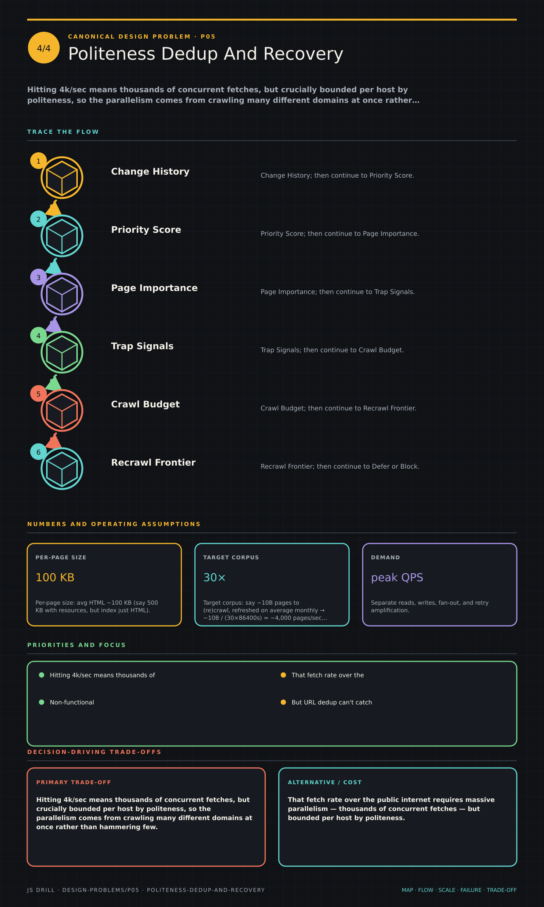

https://frosty110.github.io/js-drill/assets/system-design/infographics/design-problems/p05/politeness-dedup-and-recovery.pngHitting 4k/sec means thousands of concurrent fetches, but crucially bounded per host by politeness, so the parallelism comes from crawling many different domains at once rather than hammering few.
A distributed crawler (Googlebot-style) that starts from seed URLs and traverses the web breadth-first to fetch pages for indexing. The signature challenges are a polite, prioritized URL frontier, deduplicating both URLs and page content, and staying robust against crawler traps and infinite spaces while re-crawling for freshness.
All questions, model answers and diagrams for Design a Web Crawler →